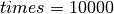
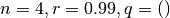

1. Chaos game czyli nauka panowania nad chaosem, dla programistów w ramach spędzania wolnego czasu¶
Chaos game dla niewtajemniczonego brzmi dość złowrogo i przywodzi na myśl gry typu FPP, gdzie do tłumów kosmicznych najeźdźców strzela się z różnych strzelających urządzeń, najczęściej dużego kalibru.
Prawda nie jest aż tak atrakcyjna dla fanów e-sportu, aczkolwiek może sprawić, że przez chwilę opuścimy broń i zastanowimy się nad istotą chaosu (oczywiście tego policzalnego).
1.1. O co chodzi¶
Termin Chaos game został podany przez Barnsleya (rozszerzyć to) i dotyczył prostej matematycznej zabawy, którą można opisać następująco:
Warunki początkowe
- W układzie współrzędnych wyznaczyć zbiór
wierzchołków wielokąta (najlepiej foremnego).
- Losowo wybrać pierwszy punkt aktywny (może być dowolnym punktem przestrzeni, wewnątrz lub na zewnątrz wielokąta).
Algorytm
- Narysować punkt aktywny
- Wylosować wierzchołek wielokąta z uwzględnieniem ograniczeń
- Wyznaczyć nowy punkt leżący na odcinku łączącym punkt aktywny z wylosowanym wierzchołkiem znajdący się odległości
od wylosowanego wierzchołka
- Nowy punkt staje się punktem aktywnym
Algorytm powtarzamy wyznaczoną ilość powtórzeń  . W literaturze stosuje się zazwyczaj
. W literaturze stosuje się zazwyczaj  , jako dość wydajny kompromis pomiędzy efektem wizualnym a łącznym czasem wykonania algorytmu.
, jako dość wydajny kompromis pomiędzy efektem wizualnym a łącznym czasem wykonania algorytmu.
W wyniku manipulacji parameterami  oraz times, podobno, można osiągnąć interesujące wizualnie wyniki, co mam nadzieję udowodnić w dalszej części.
oraz times, podobno, można osiągnąć interesujące wizualnie wyniki, co mam nadzieję udowodnić w dalszej części.
Dla wygody zakładamy, że
- wielokąty będą foremne,
- pierwszy punkt aktywny będzie miał współrzędne
,
- wartości współrzędnych wierzchołków, będą większe od zera i będą budować wielokąty foremne,
- zaś ilość powtórzeń .
Oczywiście zachęcam do eksperymentowania z wartościami tych ustawień, jednak uprzedzam, nie mają zbyt dużego wpływu na osiągane wyniki.
1.2. Do dzieła¶
Zabawę zaczniemy od trójkąta równobocznego, a wyznaczone przez nas parametry będą przedstawiały się następująco:

Co oznacza:
- wielokąt będzie miał trzy wierzchołki,
- nowy punkt pojawi się w połowie odległości między punktem aktywnym a wylosowanym wierzchołkiem,
- wierzchołki losowane są bez żadnych dodatkowych ograniczeń.
Oto co otrzymamy:
[Obrazek trójkąt]
Pojawił się Trójkąt Sierpińskiego, całkiem atrakcyjny wizualnie układ, mimo losowości wybierania wierzchołków. Świetnie, spróbujmy teraz z większą ilością wierzchołków, następny w kolejce kwadrat, opisujemy go następująco:

Rezultat niestety nie zachwyca:
[Obrazek kwadrat 1]
Spróbujmy dla większej ilości wierzchołków, pięciokąt i sześciokąt foremny

[Obrazek pięciokąt 1]
[Obrazek sześciokąt 1]
Chyba nie tędy droga, chaos jak to chaos rządzi się swoimi prawami, bardzo ładnie zadziałał na trójkącie, ale zmiana ilości wierzchołków daje wyniki na poziomie szumu, jedno co widzimy, to to, że pomimo wyboru punktu startowego na zewnątrz figury, prawie wszystkie punkty wylądowały wewnątrz.
Ponieważ zmiana ilości boków bez zmiany innych parametrów nie przyniosła zbyt spektakularnych efektów wracamy do kwadratu,
ale zmienimy parametr o połowę.
[Obrazek kwadrat 2]
No to wygląda znacznie lepiej, duże uporządkowanie, aczkolwiek dużo punktów trafiło na niewielką powierzchnię.
Ciekawe co stanie się jeżeli pozmieniamy nieco parametr , np. nadając mu wartości odpowiednio 0.4, 0.6, 0.75, 0.9 i 0.99.

[Obrazek kwadrat 2]

[Obrazek kwadrat 2]

[Obrazek kwadrat 2]

[Obrazek kwadrat 2]

[Obrazek kwadrat 2]
Widać, że uporządkowanie chaosu przebiega nieregularnie i o ile dla wartości 0.25 i 0.4 wygląda obiecująco, przy 0.5 zanika, zaś dla 0.6 zdaje się wprowadzać jakieś “nitkowate” uporządkowanie o tyle dla > 0.75 wszystko zaczyna być wchłaniane przez “czarną dziurę”. Chciałoby się powiedzieć jak to w chaosie, biorąc pod uwagę pierwotne znaczenie tego słowa, jako kosmicznej pramaterii.
Pozostał nam jeszcze jeden parameter do regulacji określony jako zadane ograniczenia  .
Trochę, na temat jaki charakter będą miały te ograniczenia, np. nowy punkt nie może być taki sam jak poprzedni,
przy okazji wrócimy do startowej wartości parametru
.
Trochę, na temat jaki charakter będą miały te ograniczenia, np. nowy punkt nie może być taki sam jak poprzedni,
przy okazji wrócimy do startowej wartości parametru  . Ogranicznie nowy punkt nie może być taki sam jak poprzedni
zapiszemy jako
. Ogranicznie nowy punkt nie może być taki sam jak poprzedni
zapiszemy jako  .
.

[Obrazek kwadrat 2]
No, to można nazwać sukcesem, elegancki fraktal przypominający mapę albo jakieś mury obronne.
1.3. Więcej o tabeli ograniczeń¶
W poprzednim przykładzie po raz pierwszy użyliśmy niepustej tabeli ograniczeń , należy się więc kilka słów z czym
to się je, to znaczy, co zawiera ta tablica. Wyjdziemy jednak od sposobu w jaki losowane są wierzchołki, otóż wierzchołki
figury użytej do gry przechowywane są w tablicy i w wyniku losowania wybierany jest jeden z indeksów tej tablicy, liczba całkowita
z przedziału ![[0, n - 1]](../_images/math/1dd73cf424013bde7633f9bb3e5e4aff3267ff45.png) .
.